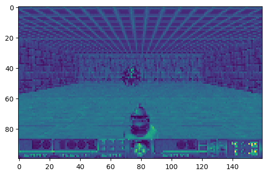

from vizdoom import DoomGame
import random
import time
import numpy as np
from gymnasium import Env
from gymnasium.spaces import Discrete, Box
import cv2
from matplotlib import pyplot as plot
from stable_baselines3.common import env_checker
import os
from stable_baselines3.common.callbacks import BaseCallback
from stable_baselines3 import PPOclass VizDoomGym(Env):
# Initalizing function
def __init__(self, render=False):
super().__init__()
self.game = DoomGame()
self.game.load_config('ViZDoom/scenarios/basic.cfg')
# Render frame logic
self.game.set_window_visible(render)
self.game.init()
self.observation_space = Box(low = 0, high = 255, shape = (100, 160, 1), dtype=np.uint8)
self.action_space = Discrete(3)
# What is done when taking a step
def step(self, action):
# Specify action then take step
actions = np.identity(3)
reward = self.game.make_action(actions[action], 4)
if self.game.get_state():
state = self.game.get_state()
img = state.screen_buffer
img = self.grayscale(img)
ammo = state.game_variables[0]
info = {'ammo': ammo}
else:
img = np.zeros(self.observation_space.shape)
info = {}
done = self.game.is_episode_finished()
#obs, reward, terminated, truncated, info
return img, reward, done, False, info
# Define how to render the game or environment
def render():
pass
# What happens when a new game is started
def reset(self, seed = None, options = None):
super().reset(seed=seed)
self.game.new_episode()
info = {}
return self.grayscale(self.game.get_state().screen_buffer), info
# Grayscale the game frame and resize it
def grayscale(self, observation):
gray = cv2.cvtColor(np.moveaxis(observation, 0, -1), cv2.COLOR_BGR2GRAY)
resize = cv2.resize(gray, (160, 100), interpolation=cv2.INTER_CUBIC)
state = np.reshape(resize, (100, 160, 1))
return state
# Will be called to close the game
def close(self):
self.game.close()env = VizDoomGym()state = env.reset()state(array([[[55],
[50],
[59],
...,
[57],
[57],
[66]],
[[68],
[65],
[65],
...,
[56],
[67],
[72]],
[[49],
[79],
[66],
...,
[79],
[51],
[29]],
...,
[[75],
[63],
[62],
...,
[44],
[71],
[60]],
[[15],
[48],
[47],
...,
[49],
[69],
[47]],
[[22],
[14],
[26],
...,
[57],
[37],
[39]]], shape=(100, 160, 1), dtype=uint8),
{})plot.imshow(state[0])
# from stable_baselines3.common import env_checkerenv_checker.check_env(env)env.close()Setup Callback
# !pip install torch torchvision --index-url https://download.pytorch.org/whl/cu126class TrainAndLoggingCallback(BaseCallback):
def __init__(self, check_freq, save_path, verbose = 1):
super(TrainAndLoggingCallback, self).__init__(verbose)
self.check_freq = check_freq
self.save_path = save_path
def _init_callback(self):
if self.save_path is not None:
os.makedirs(self.save_path, exist_ok = True)
def _on_step(self):
if self.n_calls % self.check_freq == 0:
model_path = os.path.join(self.save_path, 'best_model_{}'.format(self.n_calls))
self.model.save(model_path)
return TrueCHECKPOINT_DIR = './train/train_basic'
LOG_DIR = 'logs/log_basic'callback = TrainAndLoggingCallback(check_freq = 10_000, save_path = CHECKPOINT_DIR)env = VizDoomGym()model = PPO('CnnPolicy', env, tensorboard_log = LOG_DIR, verbose = 1, learning_rate = 0.0001, n_steps = 2048)Using cpu device
Wrapping the env with a `Monitor` wrapper
Wrapping the env in a DummyVecEnv.
Wrapping the env in a VecTransposeImage.
model.learn(total_timesteps=100_000, callback=callback)Logging to logs/log_basic\PPO_5
--------------------------------- | rollout/ | | | ep_len_mean | 37.3 | | ep_rew_mean | -112 | | time/ | | | fps | 27 | | iterations | 1 | | time_elapsed | 73 | | total_timesteps | 2048 | ---------------------------------
----------------------------------------- | rollout/ | | | ep_len_mean | 36.6 | | ep_rew_mean | -107 | | time/ | | | fps | 17 | | iterations | 2 | | time_elapsed | 237 | | total_timesteps | 4096 | | train/ | | | approx_kl | 0.008031827 | | clip_fraction | 0.159 | | clip_range | 0.2 | | entropy_loss | -1.09 | | explained_variance | 0.0002 | | learning_rate | 0.0001 | | loss | 1.11e+03 | | n_updates | 10 | | policy_gradient_loss | 0.00285 | | value_loss | 2.25e+03 | -----------------------------------------
----------------------------------------- | rollout/ | | | ep_len_mean | 33.7 | | ep_rew_mean | -86.2 | | time/ | | | fps | 17 | | iterations | 3 | | time_elapsed | 359 | | total_timesteps | 6144 | | train/ | | | approx_kl | 0.006198804 | | clip_fraction | 0.116 | | clip_range | 0.2 | | entropy_loss | -1.07 | | explained_variance | 0.0434 | | learning_rate | 0.0001 | | loss | 1.2e+03 | | n_updates | 20 | | policy_gradient_loss | 0.00325 | | value_loss | 3.57e+03 | -----------------------------------------
------------------------------------------ | rollout/ | | | ep_len_mean | 25.4 | | ep_rew_mean | -33.2 | | time/ | | | fps | 16 | | iterations | 4 | | time_elapsed | 489 | | total_timesteps | 8192 | | train/ | | | approx_kl | 0.0069106985 | | clip_fraction | 0.141 | | clip_range | 0.2 | | entropy_loss | -1.07 | | explained_variance | 0.207 | | learning_rate | 0.0001 | | loss | 1.02e+03 | | n_updates | 30 | | policy_gradient_loss | 0.00134 | | value_loss | 3.02e+03 | ------------------------------------------
----------------------------------------- | rollout/ | | | ep_len_mean | 21.5 | | ep_rew_mean | -19.2 | | time/ | | | fps | 17 | | iterations | 5 | | time_elapsed | 599 | | total_timesteps | 10240 | | train/ | | | approx_kl | 0.015898582 | | clip_fraction | 0.253 | | clip_range | 0.2 | | entropy_loss | -1.08 | | explained_variance | 0.477 | | learning_rate | 0.0001 | | loss | 1.79e+03 | | n_updates | 40 | | policy_gradient_loss | 0.00279 | | value_loss | 3.94e+03 | -----------------------------------------
----------------------------------------- | rollout/ | | | ep_len_mean | 17.9 | | ep_rew_mean | 11.6 | | time/ | | | fps | 17 | | iterations | 6 | | time_elapsed | 705 | | total_timesteps | 12288 | | train/ | | | approx_kl | 0.016505005 | | clip_fraction | 0.306 | | clip_range | 0.2 | | entropy_loss | -1.06 | | explained_variance | 0.509 | | learning_rate | 0.0001 | | loss | 1.66e+03 | | n_updates | 50 | | policy_gradient_loss | 0.00276 | | value_loss | 3.78e+03 | -----------------------------------------
------------------------------------------ | rollout/ | | | ep_len_mean | 22.8 | | ep_rew_mean | -25.4 | | time/ | | | fps | 17 | | iterations | 7 | | time_elapsed | 811 | | total_timesteps | 14336 | | train/ | | | approx_kl | 0.0100419335 | | clip_fraction | 0.27 | | clip_range | 0.2 | | entropy_loss | -1.06 | | explained_variance | 0.547 | | learning_rate | 0.0001 | | loss | 2.33e+03 | | n_updates | 60 | | policy_gradient_loss | 0.00814 | | value_loss | 4.06e+03 | ------------------------------------------
----------------------------------------- | rollout/ | | | ep_len_mean | 21 | | ep_rew_mean | -15.1 | | time/ | | | fps | 17 | | iterations | 8 | | time_elapsed | 933 | | total_timesteps | 16384 | | train/ | | | approx_kl | 0.011931584 | | clip_fraction | 0.259 | | clip_range | 0.2 | | entropy_loss | -1.04 | | explained_variance | 0.442 | | learning_rate | 0.0001 | | loss | 1.96e+03 | | n_updates | 70 | | policy_gradient_loss | 0.00551 | | value_loss | 3.76e+03 | -----------------------------------------
----------------------------------------- | rollout/ | | | ep_len_mean | 22.2 | | ep_rew_mean | -24 | | time/ | | | fps | 17 | | iterations | 9 | | time_elapsed | 1065 | | total_timesteps | 18432 | | train/ | | | approx_kl | 0.021190133 | | clip_fraction | 0.321 | | clip_range | 0.2 | | entropy_loss | -1 | | explained_variance | 0.662 | | learning_rate | 0.0001 | | loss | 1.17e+03 | | n_updates | 80 | | policy_gradient_loss | 0.00839 | | value_loss | 2.66e+03 | -----------------------------------------
----------------------------------------- | rollout/ | | | ep_len_mean | 19.6 | | ep_rew_mean | -7.35 | | time/ | | | fps | 17 | | iterations | 10 | | time_elapsed | 1171 | | total_timesteps | 20480 | | train/ | | | approx_kl | 0.019842878 | | clip_fraction | 0.283 | | clip_range | 0.2 | | entropy_loss | -0.996 | | explained_variance | 0.616 | | learning_rate | 0.0001 | | loss | 1.87e+03 | | n_updates | 90 | | policy_gradient_loss | 0.000487 | | value_loss | 3.39e+03 | -----------------------------------------
----------------------------------------- | rollout/ | | | ep_len_mean | 13.6 | | ep_rew_mean | 30.1 | | time/ | | | fps | 17 | | iterations | 11 | | time_elapsed | 1277 | | total_timesteps | 22528 | | train/ | | | approx_kl | 0.016900375 | | clip_fraction | 0.281 | | clip_range | 0.2 | | entropy_loss | -0.955 | | explained_variance | 0.732 | | learning_rate | 0.0001 | | loss | 1.17e+03 | | n_updates | 100 | | policy_gradient_loss | 0.0051 | | value_loss | 2.52e+03 | -----------------------------------------
----------------------------------------- | rollout/ | | | ep_len_mean | 13.7 | | ep_rew_mean | 32 | | time/ | | | fps | 17 | | iterations | 12 | | time_elapsed | 1385 | | total_timesteps | 24576 | | train/ | | | approx_kl | 0.019097328 | | clip_fraction | 0.253 | | clip_range | 0.2 | | entropy_loss | -0.947 | | explained_variance | 0.7 | | learning_rate | 0.0001 | | loss | 968 | | n_updates | 110 | | policy_gradient_loss | 0.00474 | | value_loss | 2.91e+03 | -----------------------------------------
---------------------------------------- | rollout/ | | | ep_len_mean | 12.7 | | ep_rew_mean | 36.8 | | time/ | | | fps | 17 | | iterations | 13 | | time_elapsed | 1500 | | total_timesteps | 26624 | | train/ | | | approx_kl | 0.03129419 | | clip_fraction | 0.345 | | clip_range | 0.2 | | entropy_loss | -0.924 | | explained_variance | 0.703 | | learning_rate | 0.0001 | | loss | 1.84e+03 | | n_updates | 120 | | policy_gradient_loss | 0.0032 | | value_loss | 3.61e+03 | ----------------------------------------
---------------------------------------- | rollout/ | | | ep_len_mean | 15.4 | | ep_rew_mean | 24.2 | | time/ | | | fps | 17 | | iterations | 14 | | time_elapsed | 1620 | | total_timesteps | 28672 | | train/ | | | approx_kl | 0.01563338 | | clip_fraction | 0.219 | | clip_range | 0.2 | | entropy_loss | -0.879 | | explained_variance | 0.755 | | learning_rate | 0.0001 | | loss | 1.26e+03 | | n_updates | 130 | | policy_gradient_loss | -0.0113 | | value_loss | 2.85e+03 | ----------------------------------------
----------------------------------------- | rollout/ | | | ep_len_mean | 8.98 | | ep_rew_mean | 59.6 | | time/ | | | fps | 17 | | iterations | 15 | | time_elapsed | 1734 | | total_timesteps | 30720 | | train/ | | | approx_kl | 0.026586147 | | clip_fraction | 0.295 | | clip_range | 0.2 | | entropy_loss | -0.852 | | explained_variance | 0.702 | | learning_rate | 0.0001 | | loss | 1.53e+03 | | n_updates | 140 | | policy_gradient_loss | -0.00597 | | value_loss | 3.25e+03 | -----------------------------------------
----------------------------------------- | rollout/ | | | ep_len_mean | 6.7 | | ep_rew_mean | 72.5 | | time/ | | | fps | 17 | | iterations | 16 | | time_elapsed | 1851 | | total_timesteps | 32768 | | train/ | | | approx_kl | 0.024034875 | | clip_fraction | 0.297 | | clip_range | 0.2 | | entropy_loss | -0.777 | | explained_variance | 0.749 | | learning_rate | 0.0001 | | loss | 1.16e+03 | | n_updates | 150 | | policy_gradient_loss | 0.000742 | | value_loss | 2e+03 | -----------------------------------------
---------------------------------------- | rollout/ | | | ep_len_mean | 5.11 | | ep_rew_mean | 80.6 | | time/ | | | fps | 17 | | iterations | 17 | | time_elapsed | 1978 | | total_timesteps | 34816 | | train/ | | | approx_kl | 0.03660737 | | clip_fraction | 0.274 | | clip_range | 0.2 | | entropy_loss | -0.712 | | explained_variance | 0.544 | | learning_rate | 0.0001 | | loss | 373 | | n_updates | 160 | | policy_gradient_loss | 0.000444 | | value_loss | 962 | ----------------------------------------
---------------------------------------- | rollout/ | | | ep_len_mean | 6.08 | | ep_rew_mean | 75 | | time/ | | | fps | 17 | | iterations | 18 | | time_elapsed | 2108 | | total_timesteps | 36864 | | train/ | | | approx_kl | 0.04202467 | | clip_fraction | 0.324 | | clip_range | 0.2 | | entropy_loss | -0.62 | | explained_variance | 0.361 | | learning_rate | 0.0001 | | loss | 248 | | n_updates | 170 | | policy_gradient_loss | 0.047 | | value_loss | 570 | ----------------------------------------
---------------------------------------- | rollout/ | | | ep_len_mean | 4.33 | | ep_rew_mean | 84.5 | | time/ | | | fps | 17 | | iterations | 19 | | time_elapsed | 2232 | | total_timesteps | 38912 | | train/ | | | approx_kl | 0.06758332 | | clip_fraction | 0.284 | | clip_range | 0.2 | | entropy_loss | -0.5 | | explained_variance | 0.747 | | learning_rate | 0.0001 | | loss | 278 | | n_updates | 180 | | policy_gradient_loss | 0.0185 | | value_loss | 677 | ----------------------------------------
----------------------------------------- | rollout/ | | | ep_len_mean | 4.43 | | ep_rew_mean | 84.1 | | time/ | | | fps | 17 | | iterations | 20 | | time_elapsed | 2356 | | total_timesteps | 40960 | | train/ | | | approx_kl | 0.035400808 | | clip_fraction | 0.171 | | clip_range | 0.2 | | entropy_loss | -0.328 | | explained_variance | 0.276 | | learning_rate | 0.0001 | | loss | 65.7 | | n_updates | 190 | | policy_gradient_loss | 0.0256 | | value_loss | 199 | -----------------------------------------
----------------------------------------- | rollout/ | | | ep_len_mean | 4.3 | | ep_rew_mean | 84.4 | | time/ | | | fps | 17 | | iterations | 21 | | time_elapsed | 2480 | | total_timesteps | 43008 | | train/ | | | approx_kl | 0.025659787 | | clip_fraction | 0.165 | | clip_range | 0.2 | | entropy_loss | -0.271 | | explained_variance | 0.432 | | learning_rate | 0.0001 | | loss | 170 | | n_updates | 200 | | policy_gradient_loss | 0.0163 | | value_loss | 305 | -----------------------------------------
----------------------------------------- | rollout/ | | | ep_len_mean | 4.57 | | ep_rew_mean | 82.8 | | time/ | | | fps | 17 | | iterations | 22 | | time_elapsed | 2602 | | total_timesteps | 45056 | | train/ | | | approx_kl | 0.039888382 | | clip_fraction | 0.182 | | clip_range | 0.2 | | entropy_loss | -0.289 | | explained_variance | 0.631 | | learning_rate | 0.0001 | | loss | 238 | | n_updates | 210 | | policy_gradient_loss | 0.00922 | | value_loss | 568 | -----------------------------------------
---------------------------------------- | rollout/ | | | ep_len_mean | 4.08 | | ep_rew_mean | 85.8 | | time/ | | | fps | 17 | | iterations | 23 | | time_elapsed | 2735 | | total_timesteps | 47104 | | train/ | | | approx_kl | 0.06452452 | | clip_fraction | 0.135 | | clip_range | 0.2 | | entropy_loss | -0.221 | | explained_variance | 0.743 | | learning_rate | 0.0001 | | loss | 103 | | n_updates | 220 | | policy_gradient_loss | 0.0105 | | value_loss | 295 | ----------------------------------------
----------------------------------------- | rollout/ | | | ep_len_mean | 3.91 | | ep_rew_mean | 87.1 | | time/ | | | fps | 17 | | iterations | 24 | | time_elapsed | 2875 | | total_timesteps | 49152 | | train/ | | | approx_kl | 0.051547267 | | clip_fraction | 0.114 | | clip_range | 0.2 | | entropy_loss | -0.268 | | explained_variance | 0.424 | | learning_rate | 0.0001 | | loss | 64.2 | | n_updates | 230 | | policy_gradient_loss | 0.0182 | | value_loss | 119 | -----------------------------------------
---------------------------------------- | rollout/ | | | ep_len_mean | 4.43 | | ep_rew_mean | 83.2 | | time/ | | | fps | 17 | | iterations | 25 | | time_elapsed | 3004 | | total_timesteps | 51200 | | train/ | | | approx_kl | 0.09885045 | | clip_fraction | 0.194 | | clip_range | 0.2 | | entropy_loss | -0.294 | | explained_variance | 0.463 | | learning_rate | 0.0001 | | loss | 85.2 | | n_updates | 240 | | policy_gradient_loss | 0.0444 | | value_loss | 92.5 | ----------------------------------------
---------------------------------------- | rollout/ | | | ep_len_mean | 4.07 | | ep_rew_mean | 85.5 | | time/ | | | fps | 16 | | iterations | 26 | | time_elapsed | 3145 | | total_timesteps | 53248 | | train/ | | | approx_kl | 0.04427678 | | clip_fraction | 0.137 | | clip_range | 0.2 | | entropy_loss | -0.171 | | explained_variance | 0.525 | | learning_rate | 0.0001 | | loss | 51.1 | | n_updates | 250 | | policy_gradient_loss | -0.00718 | | value_loss | 134 | ----------------------------------------
----------------------------------------- | rollout/ | | | ep_len_mean | 4.59 | | ep_rew_mean | 82.9 | | time/ | | | fps | 16 | | iterations | 27 | | time_elapsed | 3283 | | total_timesteps | 55296 | | train/ | | | approx_kl | 0.080336615 | | clip_fraction | 0.146 | | clip_range | 0.2 | | entropy_loss | -0.144 | | explained_variance | 0.568 | | learning_rate | 0.0001 | | loss | 145 | | n_updates | 260 | | policy_gradient_loss | 0.00436 | | value_loss | 187 | -----------------------------------------
---------------------------------------- | rollout/ | | | ep_len_mean | 7.2 | | ep_rew_mean | 66.7 | | time/ | | | fps | 16 | | iterations | 28 | | time_elapsed | 3403 | | total_timesteps | 57344 | | train/ | | | approx_kl | 0.05472456 | | clip_fraction | 0.145 | | clip_range | 0.2 | | entropy_loss | -0.202 | | explained_variance | 0.463 | | learning_rate | 0.0001 | | loss | 71.3 | | n_updates | 270 | | policy_gradient_loss | -0.0203 | | value_loss | 136 | ----------------------------------------
----------------------------------------- | rollout/ | | | ep_len_mean | 4.11 | | ep_rew_mean | 85.9 | | time/ | | | fps | 16 | | iterations | 29 | | time_elapsed | 3536 | | total_timesteps | 59392 | | train/ | | | approx_kl | 0.046149664 | | clip_fraction | 0.258 | | clip_range | 0.2 | | entropy_loss | -0.386 | | explained_variance | 0.662 | | learning_rate | 0.0001 | | loss | 211 | | n_updates | 280 | | policy_gradient_loss | 0.0296 | | value_loss | 526 | -----------------------------------------
---------------------------------------- | rollout/ | | | ep_len_mean | 4.07 | | ep_rew_mean | 86.3 | | time/ | | | fps | 16 | | iterations | 30 | | time_elapsed | 3671 | | total_timesteps | 61440 | | train/ | | | approx_kl | 0.07385181 | | clip_fraction | 0.224 | | clip_range | 0.2 | | entropy_loss | -0.31 | | explained_variance | 0.867 | | learning_rate | 0.0001 | | loss | 276 | | n_updates | 290 | | policy_gradient_loss | 0.0387 | | value_loss | 547 | ----------------------------------------
---------------------------------------- | rollout/ | | | ep_len_mean | 4.13 | | ep_rew_mean | 85.7 | | time/ | | | fps | 16 | | iterations | 31 | | time_elapsed | 3798 | | total_timesteps | 63488 | | train/ | | | approx_kl | 0.04409369 | | clip_fraction | 0.162 | | clip_range | 0.2 | | entropy_loss | -0.216 | | explained_variance | 0.898 | | learning_rate | 0.0001 | | loss | 168 | | n_updates | 300 | | policy_gradient_loss | 0.0411 | | value_loss | 461 | ----------------------------------------
---------------------------------------- | rollout/ | | | ep_len_mean | 4.55 | | ep_rew_mean | 84.4 | | time/ | | | fps | 16 | | iterations | 32 | | time_elapsed | 3923 | | total_timesteps | 65536 | | train/ | | | approx_kl | 0.07615723 | | clip_fraction | 0.104 | | clip_range | 0.2 | | entropy_loss | -0.177 | | explained_variance | 0.367 | | learning_rate | 0.0001 | | loss | 57.3 | | n_updates | 310 | | policy_gradient_loss | 0.000813 | | value_loss | 97.8 | ----------------------------------------
----------------------------------------- | rollout/ | | | ep_len_mean | 3.86 | | ep_rew_mean | 87.3 | | time/ | | | fps | 16 | | iterations | 33 | | time_elapsed | 4062 | | total_timesteps | 67584 | | train/ | | | approx_kl | 0.059634015 | | clip_fraction | 0.275 | | clip_range | 0.2 | | entropy_loss | -0.23 | | explained_variance | 0.482 | | learning_rate | 0.0001 | | loss | 19.6 | | n_updates | 320 | | policy_gradient_loss | 0.0381 | | value_loss | 114 | -----------------------------------------
----------------------------------------- | rollout/ | | | ep_len_mean | 4.77 | | ep_rew_mean | 83.6 | | time/ | | | fps | 16 | | iterations | 34 | | time_elapsed | 4208 | | total_timesteps | 69632 | | train/ | | | approx_kl | 0.023330137 | | clip_fraction | 0.134 | | clip_range | 0.2 | | entropy_loss | -0.204 | | explained_variance | 0.772 | | learning_rate | 0.0001 | | loss | 5.64 | | n_updates | 330 | | policy_gradient_loss | 0.0358 | | value_loss | 30.2 | -----------------------------------------
----------------------------------------- | rollout/ | | | ep_len_mean | 4.93 | | ep_rew_mean | 80.7 | | time/ | | | fps | 16 | | iterations | 35 | | time_elapsed | 4346 | | total_timesteps | 71680 | | train/ | | | approx_kl | 0.034856584 | | clip_fraction | 0.101 | | clip_range | 0.2 | | entropy_loss | -0.186 | | explained_variance | 0.621 | | learning_rate | 0.0001 | | loss | 49 | | n_updates | 340 | | policy_gradient_loss | 0.00348 | | value_loss | 74.5 | -----------------------------------------
---------------------------------------- | rollout/ | | | ep_len_mean | 4.37 | | ep_rew_mean | 85 | | time/ | | | fps | 16 | | iterations | 36 | | time_elapsed | 4483 | | total_timesteps | 73728 | | train/ | | | approx_kl | 0.03577419 | | clip_fraction | 0.128 | | clip_range | 0.2 | | entropy_loss | -0.176 | | explained_variance | 0.75 | | learning_rate | 0.0001 | | loss | 32.9 | | n_updates | 350 | | policy_gradient_loss | 0.00633 | | value_loss | 128 | ----------------------------------------
----------------------------------------- | rollout/ | | | ep_len_mean | 3.81 | | ep_rew_mean | 87.1 | | time/ | | | fps | 16 | | iterations | 37 | | time_elapsed | 4621 | | total_timesteps | 75776 | | train/ | | | approx_kl | 0.049503893 | | clip_fraction | 0.109 | | clip_range | 0.2 | | entropy_loss | -0.157 | | explained_variance | 0.424 | | learning_rate | 0.0001 | | loss | 14.2 | | n_updates | 360 | | policy_gradient_loss | 0.0192 | | value_loss | 96.2 | -----------------------------------------
----------------------------------------- | rollout/ | | | ep_len_mean | 4.15 | | ep_rew_mean | 85.8 | | time/ | | | fps | 16 | | iterations | 38 | | time_elapsed | 4760 | | total_timesteps | 77824 | | train/ | | | approx_kl | 0.013194643 | | clip_fraction | 0.0682 | | clip_range | 0.2 | | entropy_loss | -0.113 | | explained_variance | 0.828 | | learning_rate | 0.0001 | | loss | 12.5 | | n_updates | 370 | | policy_gradient_loss | 0.00964 | | value_loss | 25.3 | -----------------------------------------
----------------------------------------- | rollout/ | | | ep_len_mean | 3.75 | | ep_rew_mean | 87.6 | | time/ | | | fps | 16 | | iterations | 39 | | time_elapsed | 4896 | | total_timesteps | 79872 | | train/ | | | approx_kl | 0.023040593 | | clip_fraction | 0.0402 | | clip_range | 0.2 | | entropy_loss | -0.0898 | | explained_variance | 0.729 | | learning_rate | 0.0001 | | loss | 7.06 | | n_updates | 380 | | policy_gradient_loss | 0.00501 | | value_loss | 44.5 | -----------------------------------------
----------------------------------------- | rollout/ | | | ep_len_mean | 4.43 | | ep_rew_mean | 84.8 | | time/ | | | fps | 16 | | iterations | 40 | | time_elapsed | 5029 | | total_timesteps | 81920 | | train/ | | | approx_kl | 0.009048265 | | clip_fraction | 0.057 | | clip_range | 0.2 | | entropy_loss | -0.0741 | | explained_variance | 0.842 | | learning_rate | 0.0001 | | loss | 12.8 | | n_updates | 390 | | policy_gradient_loss | 0.00985 | | value_loss | 25.5 | -----------------------------------------
------------------------------------------ | rollout/ | | | ep_len_mean | 3.84 | | ep_rew_mean | 87.4 | | time/ | | | fps | 16 | | iterations | 41 | | time_elapsed | 5205 | | total_timesteps | 83968 | | train/ | | | approx_kl | 0.0072483975 | | clip_fraction | 0.043 | | clip_range | 0.2 | | entropy_loss | -0.092 | | explained_variance | 0.886 | | learning_rate | 0.0001 | | loss | 7.94 | | n_updates | 400 | | policy_gradient_loss | 0.00921 | | value_loss | 16.8 | ------------------------------------------
----------------------------------------- | rollout/ | | | ep_len_mean | 3.88 | | ep_rew_mean | 87.4 | | time/ | | | fps | 15 | | iterations | 42 | | time_elapsed | 5428 | | total_timesteps | 86016 | | train/ | | | approx_kl | 0.024217216 | | clip_fraction | 0.0489 | | clip_range | 0.2 | | entropy_loss | -0.0853 | | explained_variance | 0.781 | | learning_rate | 0.0001 | | loss | 33 | | n_updates | 410 | | policy_gradient_loss | 0.00352 | | value_loss | 32.3 | -----------------------------------------
--------------------------------------- | rollout/ | | | ep_len_mean | 3.91 | | ep_rew_mean | 87.3 | | time/ | | | fps | 15 | | iterations | 43 | | time_elapsed | 5576 | | total_timesteps | 88064 | | train/ | | | approx_kl | 0.0317981 | | clip_fraction | 0.0597 | | clip_range | 0.2 | | entropy_loss | -0.0988 | | explained_variance | 0.874 | | learning_rate | 0.0001 | | loss | 7.44 | | n_updates | 420 | | policy_gradient_loss | 0.0255 | | value_loss | 16.6 | ---------------------------------------
----------------------------------------- | rollout/ | | | ep_len_mean | 3.9 | | ep_rew_mean | 87.2 | | time/ | | | fps | 15 | | iterations | 44 | | time_elapsed | 5721 | | total_timesteps | 90112 | | train/ | | | approx_kl | 0.009329056 | | clip_fraction | 0.056 | | clip_range | 0.2 | | entropy_loss | -0.0793 | | explained_variance | 0.924 | | learning_rate | 0.0001 | | loss | 2.97 | | n_updates | 430 | | policy_gradient_loss | 0.0124 | | value_loss | 9.34 | -----------------------------------------
---------------------------------------- | rollout/ | | | ep_len_mean | 3.87 | | ep_rew_mean | 87.2 | | time/ | | | fps | 15 | | iterations | 45 | | time_elapsed | 5849 | | total_timesteps | 92160 | | train/ | | | approx_kl | 0.07448046 | | clip_fraction | 0.069 | | clip_range | 0.2 | | entropy_loss | -0.0692 | | explained_variance | 0.586 | | learning_rate | 0.0001 | | loss | 14.8 | | n_updates | 440 | | policy_gradient_loss | 0.000335 | | value_loss | 66.9 | ----------------------------------------
----------------------------------------- | rollout/ | | | ep_len_mean | 4.34 | | ep_rew_mean | 85.4 | | time/ | | | fps | 15 | | iterations | 46 | | time_elapsed | 5988 | | total_timesteps | 94208 | | train/ | | | approx_kl | 0.024699772 | | clip_fraction | 0.0459 | | clip_range | 0.2 | | entropy_loss | -0.0655 | | explained_variance | 0.718 | | learning_rate | 0.0001 | | loss | 27.4 | | n_updates | 450 | | policy_gradient_loss | 0.0177 | | value_loss | 39 | -----------------------------------------